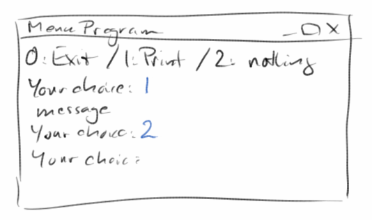
Console
Konsolenprogramme sind eigentlich noch einfacher zu schreiben als Grafikprogramme. Aber sie sind etwas abstrakter, deswegen beschäftigen wir uns erst jetzt mit ihnen. Es geht häufig darum mit dem Benutzer unseres Programmes zu interagieren. Ausserdem werden viele Konzepte die wir in den letzten beiden Kapiteln kennengelernt und verwendet haben, näher erklärt und vertieft.
.
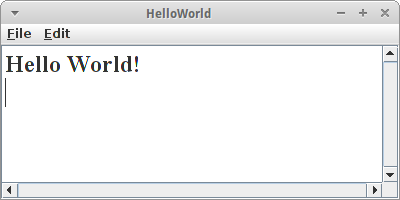ConsoleProgram
Schauen wir uns ein einfaches 'HelloWorld' Konsolenprogramm an:
import acm.program.ConsoleProgram;
public class HelloWorld extends ConsoleProgram {
public void run() {
println("Hello World!");
}
}
Wie üblich interessieren uns nur die Zeilen in der run() Methode. Die besagen, dass der Computer doch den Text in Anführungszeichen, also "Hello World", in einem Konsolenfenster ausgeben soll. Dabei ist 'println' die Kurzform von 'print line' und bedeutet genau das, also schreibe eine Zeile ins Konsolenfenster.
.
readInt()
Konsolenprogramme wären recht langweilig wenn es nur 'println()' geben würde. Das Gegenstück dazu ist readInt(). Es erlaubt dem Benutzer unseres Programms eine Zahl einzugeben.
int n1 = readInt("Enter number one: ");
Dabei ist der Text in Anführungszeichen nicht unbedingt notwendig, aber er gibt dem Benutzer einen Hinweis darauf was er denn tun soll.
.
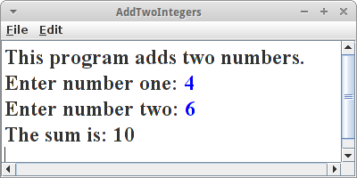Übung: AddTwoIntegers
Schauen wir uns gleich mal ein Beispiel an. Wir wollen zwei Zahlen addieren und das Resultat auf der Konsole ausgeben.
println("This program adds two numbers.");
int n1 = readInt("Enter number one: ");
int n2 = readInt("Enter number two: ");
int sum = n1 + n2;
println( "The sum is: " + sum );
Die erste Zeile teilt dem Benutzer einfach mit was das Programm macht. Dann wird der Benutzer aufgefordert die erste Zahl einzugeben. Das Programm wartet jetzt solange bis der Benutzer eine Zahl eingibt. Danach fordert es den Benutzer auf die zweite Zahl einzugeben. Nachdem der Benutzer dies getan hat, addieren wir die beiden Zahlen n1 und n2. Wir speichern das Resultat in der Variablen sum. In der letzten Zeile wird dann die Summe ausgegeben.
Frage: Wie würde wohl ein Programm aussehen, das zwei Zahlen subtrahiert?
.
Variablen
Die Frage die wir uns sofort stellen, was ist eine Variable? Variablen sind ein bischen wie Schachteln in die man Sachen reintun kann. Was für Sachen kann man da reintun? Z.B. Zahlen oder GRects. Das muss man aber immer explizit sagen was in die Schachtel rein kann. Also z.B. in eine Schachtel für Zahlen kann man nur Zahlen rein tun, und in eine Schachtel für GRects kann man nur GRects rein tun. Variablen haben auch immer einen Namen, z.B. 'n1' oder 'fritz'.
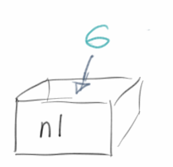Außen auf der Schachtel steht ein Name, z.B. 'n1' oder 'fritz'. Wenn wir also z.B. sagen
int n1;
dann heißt das es gibt eine Schachtel die den Namen 'n1' hat. Wenn wir dann sagen
n1 = 6;
dann ist das so wie wenn wir die Zahl 6 in die Schachtel hineintun. Man nennt das auch Zuweisung, also der Schachtel 'n1' wird die Zahl '6' zugewiesen. Wenn man will kann man die Zahl die in der Schachtel ist auch ändern. Man macht dann einfach eine neue Zuweisung und sagt
n1 = 5;
d.h., wir ersetzen die alte Zahl durch die neue Zahl '5'. Außen auf der Schachtel steht aber nachwievor 'n1'.
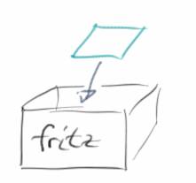Wir können aber nicht nur Zahlen in die Schachteln tun, sondern auch andere Sachen. Z.B. mit
GRect fritz;
sagen wir, dass es eine Schachtel gibt, die 'fritz' heißt. In diese Schachtel können wir GRects reintun, also mit
fritz = new GRect(50, 50);
legen wir ein neues GRect das 50 Pixel breit und 50 Pixel hoch ist in die Schachtel. Ganz wichtig, in eine Schachtel für GRects können wir keine Zahlen tun, und in eine Schachtel für Zahlen können wir keine GRects tun.
.
Deklaration und Zuweisung
Wenn wir sagen
int n1;
dann deklarieren wir eine Variable. Die Variable heißt 'n1' und ist vom Typ Zahl (int ist eine Abkürzung für Englisch 'integer', was soviel wie Ganzzahl bedeutet). Wenn wir dann sagen
n1 = 6;
machen wir eine Zuweisung, wir weisen also der Variablen 'n1' den Wert '6' zu. Das '=' bedeutet also nicht Gleichheit, sondern Zuweisung. Das ist ganz wichtig.
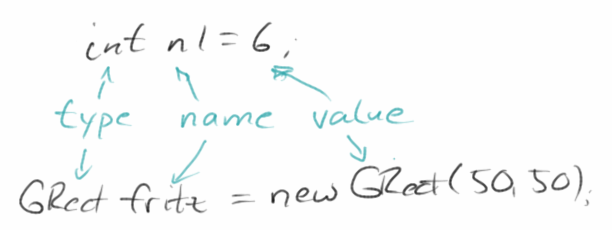Was die Namen von Variablen angeht, so können diese fast beliebig sein, sie dürfen aus Buchstaben, Zahlen und dem Unterstrich bestehen. Einige Wörter sind allerdings nicht erlaubt, wie z.B. 'if' und 'for', weil diese bereits von Java verwendet werden. Auch dürfen Namen nicht mit Zahlen beginnen und Umlauten sollte man generell vermeiden. Und man muss immer auf Groß- / Kleinschreibung achten!
Eine Variable hat also immer einen Namen, einen Typ und einen Wert.
SEP: Die Namen von Variablen sollten immer beschreibend sein, also z.B. 'blueRect'.
.
Typen
Was für Typen gibt es denn? Im letzten Kapitel haben wir schon einige kennengelernt: GRect, GOval, GLine u.s.w. sind alles Typen, genauer gesagt Datentypen. Es gibt aber auch andere Typen. Die die uns in diesem Kapitel beschäftigen werden sind die sogenannten primitiven Datentypen. Von denen gibt es in Java acht, aber uns interessieren nur die folgenden vier:
- int: Ganzzahlen, also 1,2,3, usw. aber auch die 0 und die -5, also positive und negative ganze Zahlen.
- double: Gleitkommazahlen, also Zahlen wie 3.14 oder 0.333 usw, (Beim Programmieren verwenden wir wie im Englischen den '.' anstelle des ',').
- boolean: wird für logische Werte verwendet, kann nur die zwei Werte true oder false haben.
- char: Buchstaben, wie z.B. 'a', 'b', aber auch Sonderzeichen wie '.' und '$' usw.
Manchmal stellt sich die Frage, soll ich jetzt einen 'int' oder einen 'double' verwenden? Die Antwort ist ganz einfach: kann man etwas zählen, dann verwendet man einen 'int'. Für alles was man nicht zählen kann verwendet man den 'double' Datentyp. Mit dem boolean Datentyp beschäftigen wir uns weiter unten, der char Datentyp muß noch ein Kapitel warten.
SEP: Für alles was man zählen kann, verwenden wir den Datentyp int.
.
Ausdruck
Das Wort Ausdruck wie wir es verwenden, hat nichts mit 'ausdrucken' zu tun. Sondern wird eher im Sinne von 'mathematischer Ausdruck' verwendet. Wir haben schon ein Beispiel gesehen, nämlich
int sum = n1 + n2;
Hier steht auf der linken Seite der Zuweisung eine Variable, 'sum', und auf der rechten Seite steht ein mathematischer Ausdruck, und zwar die Summe der Zahlen 'n1' und 'n2'. Genauer, die Summe der Zahlen die in den Schachteln 'n1' und 'n2' drinnen sind.
Was dies Zeile also bedeutet ist folgendes: Hole die Zahlen die in der Schachtel 'n1' und in der Schachtel 'n2' stehen, addiere diese und speichere das Resultat in die Schachtel 'sum'. Man kann das sehr schön mit dem Program 'Jeliot' veranschaulichen [1].
.
Übung: Jeliot
Jeliot ist ein sehr schönes Programm, dass uns hilft zu visualisieren was passiert, wenn wir die drei Zeilen
int n1 = 6;
int n2 = 4;
int sum = n1 + n2;
ausführen. Wir sehen links im Codefenster unsern Code. Wir können diesen Code Schritt für Schritt durchlaufen. Und auf der rechten Seite sehen wir einmal den Bereich für die Methoden (Method Area) in dem wir auch unsere Schachteln 'n1', 'n2' und 'sum' sehen. Sowie den Bereich für die Auswertung von Ausdrücken (Expression Evaluation Area). Wir sehen, wie gerade der Ausdruck '6+4=' ausgewertet wird. Im nächsten Schritt wird dann das Resultat ('10') in die Schachtel 'sum' gesteckt.
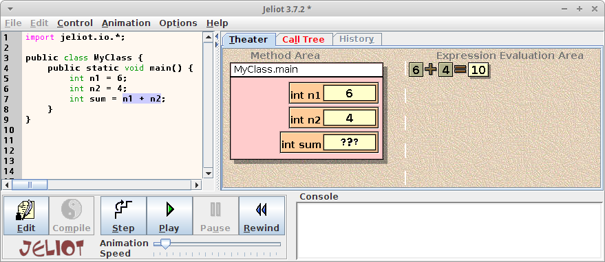
.
Operatoren
Karel hat Angst vor Operatoren. Er denkt dann immer an Krankenhaus. Wir verwenden das Wort Operator wieder eher im mathematischen Sinne, also 'plus', 'minus', 'mal' und 'geteilt durch'. In Java verwenden wir dafür die Zeichen '+', '-', '*' und '/'.
.
Division
Bei 'plus', 'minus' und 'mal' kann nicht viel schief gehen, die funktionieren immer. Aber bei der Division kann einiges schief gehen. Das erste an das wir uns vielleicht noch erinnern ist Division durch Null: das gibt immer Ärger. Das zweite was Ärger macht ist Ganzzahldivision, also was ist 5 / 2? Damals in der zweiten Klasse war das einfach 2. Aber dann später hat irgendjemand gesagt es ist 2.5. Also was nun?
Das kommt drauf an. Wenn wir mit Ganzzahlen arbeiten, also mit int, dann ist es 2. Wenn wir mit Gleitkommazahlen arbeiten, also mit double, dann ist es 2.5. Das kann zu interessanten Problemen führen. Nehmen wir das folgende Beispiel:
int x = 1 + 3 * 5 / 2;
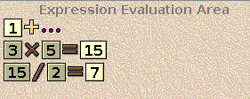Was ist der Wert von 'x'? Sieben oder acht? Mit Jeliot kann man Schritt für Schritt nachvollziehen, wie der Computer das ausrechnet. Zunächst einmal gilt 'Punkt vor Strich', d.h. die Addition wird als letztes ausgeführt. Dann stellt sich aber die Frage wird zu erst '3*5' oder '5/2' ausgerechnet? Hier gilt die Regel von links nach rechts, also wie beim Lesen, man liest (bei uns wenigstens) von links nach rechts. Also wird zuerst '3*5' berechnet, das Ergebnis durch 2 geteilt. Weil es sich um Ganzzahldivision handelt kommt dabei 7 und nicht 7.2 heraus. Wenn wir dann die 7 zu 1 addieren, erhalten wir 8 als Ergebnis.
Was passiert nun wenn wir anfangen Ganzzahlen (int) und Gleitkommazahlen (double) zu mischen? Also, so was wie 5 / 2.0? Dann tut der Computer so wie wenn alle Zahlen Gleitkommazahlen wären.
.
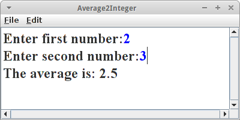Übung: AverageTwoIntegers
Man könnte denken, dass Probleme mit der Ganzzahldivision eher selten vorkommen, dem ist aber überhaupt nicht so, und das Beispiel AverageTwoIntegers soll das verdeutlichen.
Ähnlich wie bei AddTwoIntegers lesen wir zunächst zwei Ganzzahlen ein. Und wenn jemand etwas nachlässig ist, schreibt er evtl folgende Anweisung um den Durchschnitt zweier Zahlen zu berechnen:
int average = n1 + n2 / 2;
Interessanterweise funktioniert das sogar, z.B. wenn n1=1 und n2=3 ist. Allerdings für andere Zahlenwerte merkt man sehr schnell, dass da etwas nicht stimmt.
Natürlich war der Fehler die fehlenden Klammern! Also, versuchen wir es doch mit folgendem Ausdruck:
int average = ( n1 + n2 ) / 2;
Der funktioniert schon viel besser, aber immer nur wenn n1+n2 eine gerade Zahl ist. Naja klar, der Fehler liegt im Datentyp: "average" muss ein double sein:
double average = ( n1 + n2 ) / 2;
Aber auch das hilft nicht wirklich. Der Teufel liegt im Detail: da n1 und n2 vom Datentyp int sind UND auch 2 vom Datentyp int ist, führt der Computer Ganzzahldivision aus. Die Lösung für das Problem lautet:
double average = ( n1 + n2 ) / 2.0;
Obwohl dieser Fehler im nachhinein offensichtlich ist und die Lösung trivial, tritt er überraschenderweise sehr, sehr häufig auf.
SEP: Man sollte seinen Code immer ausführlich testen.
.
Punkt vor Strich
Vorrangsregeln wie 'Punkt vor Strich' gibt es ganz viele in Java. Grob gilt folgende Hierarchie:
- Klammern: ()
- *, /, %
- +, -
also zuerst Klammern, dann Multiplikation, Division und Restwert, und schließlich Addition und Subtraktion. Aber es kann noch viel komplizierter werden mit so Operatoren wie '^', '&', '|', usw. Deswegen empfiehlt es sich immer soviele Klammern wie möglich zu setzen.
SEP: Um Ärger zu vermeiden, verwende viele Klammern!
.
Restwert
Allerdings gibt es in Java noch einen weiteren Operator, den Restwert (English: modulo oder genauer remainder). Das letzte mal haben wir wahrscheinlich in der zweiten Klasse davon gehört, und zwar als wir noch nicht richtig dividieren konnten. Wenn wir damals 5 / 2 ausgerechnet haben, dann hieß das Ergebnis: zwei Restwert eins. Oder bei 4 / 2 hieß das Ergebnis zwei Restwert null. Können wir uns noch dunkel erninnern?
Es stellt sich heraus, dass der Restwert Operator äussert nützlich ist, deswegen gibt es in Java dafür ein extra Zeichen, das Prozentzeichen: '%'. Eigentlich verwenden wir den Restwert Operator jeden Tag: wenn wir sagen es ist 2 Uhr nachmittags, dann haben wir implizit 14 % 12 im Kopf ausgerechnet.
.
Übung: Gerade Zahlen, ungerade Zahlen
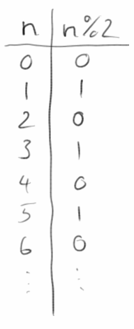Eine sinnvolle Übung ist es die Zahlen von 0 bis 6 aufzulisten und für jede dieser Zahlen den Restwert auszurechnen, also %2. Wir sehen, dass für gerade Zahlen der Restwert immer null ist und für ungerade Zahlen der Restwert immer eins. Das ist sehr nützlich, denn manchmal wollen wir wissen ob eine Zahl gerade oder ungerade ist.
.
Konstanten
Manche Variablen ändern sich nicht, sind also eigentlich Konstanten. Z.B die Kreiszahl 'Pi' hat immer den Wert '3.1415...'. Wir können das markieren mit dem Schlüsselwort final:
final double PI = 3.1415;
Konstanten können nachdem sie einmal initialisiert wurden nicht mehr verändert werden. Das mag am anfang etwas umständlich erscheinen, später werden wir aber sehen, dass die Verwendung von Konstanten zu viel besserem Code führt.
SEP: Konstanten sollten immer ganz in Großbuchstaben geschrieben werden, also z.B. 'MAX_NUM', damit man sie sofort von normalen Variablen unterscheiden kann.
.
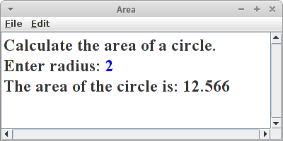Übung: Area
Schreiben Sie ein ConsoleProgram, das den Benutzer nach der Radius eines Kreises fragt, und dann dessen Fläche berechnet (Fläche = PI * Radius * Radius) und diese im Konsolenfenster ausgibt (println()). Dabei sollte PI als Konstante im Programm verwendet werden.
.
Boolesche Werte
Bisher haben wir uns mit den Zahlen, int und double, auseinandergesetzt. Jetzt wollen wir uns kurz den logischen Werten, auch boolean genannt, widmen. Um zu verstehen worum es geht betrachten wir die Ungleichung
3 > 5
also die Frage, ist drei größer als fünf. Die Antwort ist Nein. Man sagt auch die Aussage '3 > 5' ist falsch, false auf Englisch. Um damit umgehen zu können hat man den Datentyp boolean erfunden:
boolean b = 3 > 5;
d.h., also die Variable b ist vom Datentyp boolean und kann die Werte true oder false einnehmen. Das Ganze sollte uns etwas an Karel's Sensoren erinnern: z.B. der beepersPresent() Sensor hat immer true zurückgegeben, wenn ein Beeper da war und false, wenn keiner da war.
.
Bedingungen
Richtig Sinn machen boolesche Ausdrücke nur wenn sie in einer Bedingung verwendet werden. Bei Karel haben wir ja schon die if Anweisung kennen gelernt:
if ( beepersPresent() ) {
pickBeeper();
} else {
putBeeper();
}
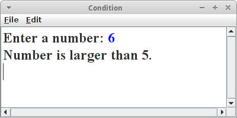Das Gleiche können wir jetzt auch mit einem Konsolenprogramm machen:
int x = readInt("Enter a number: ");
if ( x > 5 ) {
println("Number is larger than 5.");
} else {
println("Number is less than or equal to 5.");
}
Dass es sich bei 'x > 5' eigentlich um einen booleschen Ausdruck handelt, ist eigentlich eher nebensächlich.
SEP: Wir sollten bei einer if Anweisung immer die geschweiften Klammern benutzen!
.
Vergleiche
Welche anderen Vergleiche außer '>' gibt es noch? Insgesamt sechs:
== gleich != nicht gleich > größer < kleiner >= größer oder gleich <= kleiner oder gleich
.
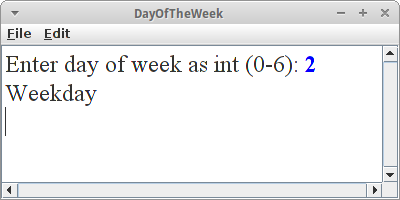Übung: DayOfTheWeek
Schreiben wir ein Programm, das ausgibt, ob ein Tag ein Werktag, ein Samstag oder ein Sonntag ist:
int day = readInt("Enter day of week as int (0-6): ");
if (day == 0) {
println("Sunday");
} else if (day <= 5) {
println("Weekday");
} else {
println("Saturday");
}
Falls also der Tag gleich null ist, dann ist es Sonntag; andernfalls, falls der Tag kleiner oder gleich 5 ist, dann ist es ein Werktag; andernfalls muss es der Samstag sein. Man bezeichnet diese Form der verketteten if Anweisung auch als 'cascading if'.
.
switch Anweisung
Die switch Anweisung gab es bei Karel noch nicht, aber sie stellt sich als sehr praktisch heraus. Im Prinzip macht sie das gleiche wie das 'cascading if', nur etwas eleganter:
int day = readInt("Enter day of week as int (0-6): ");
switch (day) {
case 0:
println("Sunday");
break;
case 6:
println("Saturday");
break;
default:
println("Weekday");
break;
}
Warum das eleganter sein soll wird sich etwas später zeigen.
SEP: Man sollte immer ein default bei der switch Anweisung haben, bzw. den letzten else Zweig beim cascading if.
.
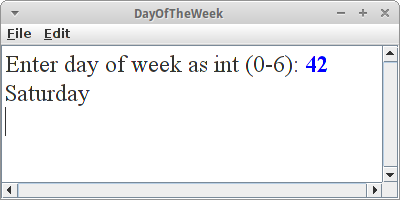Übung: DayOfTheWeek
Wir wollen unser DayOfTheWeek Problem jetzt mit der switch Anweisung lösen. Zunächst verwenden wir den Code wie oben, uns testen ob er auch funktioniert. Testen heißt, dass wir jede möglich Eingabe testen. (Was passiert wenn wir -1 oder 42 eingeben?)
Frage: Was passiert wenn wir eine der break Anweisungen weglassen?
.
Boolesche Operatoren
Erinnern wir uns an LumberjackKarel: im letzten Schritt, wenn Karel alle Bonbons einsammeln soll um sie auf einen großen Haufen zu legen, wäre es toll gewesen wenn wir zwei Bedingungen gleichzeitig hätten testen können, also ist links frei und ist ein Bonbon da:
while ( leftIsBlocked() && beepersPresent() ) {...}
Hier bedeutet das '&&' soviel wie 'und', also nur wenn beide Bedingungen erfüllt sind, soll Karel etwas machen. Ähnlich praktisch wäre es gewesen wenn wir Karel nur dann etwas hätten machen lassen wenn etwas nicht erfüllt ist,
if ( !beepersPresent() ) {...}
Hier bedeutet das '!' soviel wie 'nicht'. Schließlich, hatten wir das Beispiel von AriadneKarel wo Karel etwas tun sollte, wenn entweder vor ihm eine Wand war oder keine Bonbons da war:
if ( frontIsBlocked() || noBeepersPresent() ) {...}
Das '||' bedeutet 'oder' im Sinne von entweder-oder.
Diese drei Operatoren sind die sogenannten booleschen Operatoren:
! not && and || or
Die Reihenfolge spiegelt auch die Vorrangsregeln wider, also '!' hat eine höhere Priorität als 'and'.
.
Wahrheitstabellen
Es ist üblich die booleschen Operationen in sogenannten Wahrheitstabellen (truth tables) darzustellen. Dabei sind in1 und in2 die zwei Operanden, und out ist das Resultat, z.B.
boolean out = in1 && in2;
für die 'and' Operation. Die Wahrheitstabellen für die drei logischen Operationen sehen wie folgt aus:
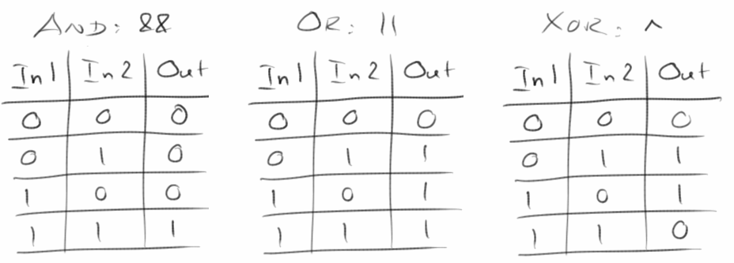
.
Übung: LeapYear
Es gibt einen coolen booleschen Ausdruck der uns angibt, ob ein Jahr ein Schaltjahr ist oder nicht:
boolean p = ((y % 4 == 0) && (y % 100 != 0)) || (y % 400 == 0);
Um den Ausdruck zu verstehen, schreibt man sich am besten die Wahrheitstabellen (truth table) dafür auf.
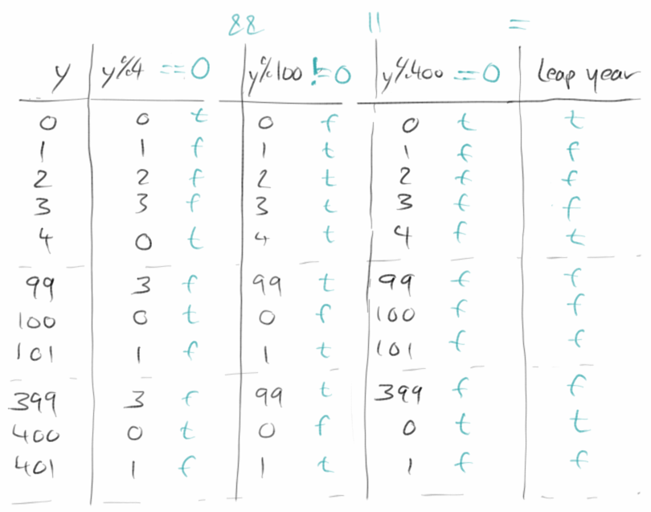
.
while Schleife
Wir haben die while Schleife schon bei Karel kennengelernt:
while ( frontIsClear() ) {
move();
}
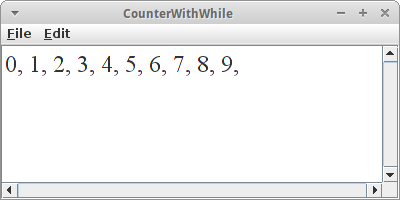Die while Schleife wird solange ausgeführt, solange eine bestimmte Bedingung erfüllt ist. Als einfach Beispiel wollen wir die Zahlen von 0 bis 9 ausgeben.
int i = 0;
while ( i < 10 ) {
println( i );
i = i + 1;
}
In der ersten Zeile deklarieren wir eine Variable namens i von Datentyp int auf den Wert 0. Dann testen wir ob i kleiner als 10 ist. Solange dies der Fall ist, drucken wir den momentanen Wert von i im Konsolenfenster, und dann erhöhen wir den Wert von i um eins.
Diese letzte Zeile mag etwas ungewöhnlich sein (speziell Mathematiker haben ein Problem damit). Aber es ist wichtig sich daran zu erinnern, dass '=' nicht für Gleichheit steht, sondern für Zuweisung. Also
i = i + 1;
bedeutet soviel wie: nimm den momentanen Wert von i, addiere dazu eins, und weise das Resultat dann der Variablen i zu.
.
Übung: CounterWithWhile
Als kleine Übung probieren wir den Zählercode aus: einfach die Zeilen oben in die run() Methode eines ConsolePrograms einfügen. Was passiert, wenn wir anstelle von println() nur print() verwenden?
.
for Schleife
Wir haben die for Schleife ja schon ganz am Anfang bei Karel kennengelernt. Damals hat uns nur die Zahl, wie oft die Schleife durchlaufen wird, interessiert. Jetzt sind wir aber soweit den Rest auch zu verstehen. Die folgende for Schleife gibt auch die Zahlen von 0 bis 9 aus:
for ( int i = 0; i < 10; i++ ) {
println(i);
}
Im Allgemeinen sieht eine for Schleife immer wie folgt aus:
for ( init; condition; step ) {
statements;
}
Als erstes wird der init Schritt ausgeführt, meist so etwas wie 'int i = 0'. Dann wird die condition gecheckt, also ist 'i < 10'? Falls ja werden die statements innerhalb der Schleife ausgeführt. Zum Schluß wird dann step ausgeführrt, also 'i++'. Das wird solange getan bis die condition nicht mehr erfüllt ist.
Was bedeutet dieses 'i++'? Man nennt es den Inkrement Operator, und er bedeutet soviel wie die Zeile
i = i + 1;
also der Wert der Variablen i wird um eins erhöht. Es gibt auch einen Dekrement Operator der genau das Gegenteil macht: 'i--'.
.
Übung: for Schleife in Jeliot
Um die for Schleife noch besser zu verstehen, sehen wir uns die Schleife mal in Jeliot an, und beobachten Schritt für Schritt was passiert.
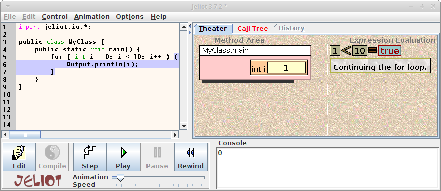.
.
for versus while
Wie wir gesehen haben, machen while Schleife und for Schleife eigentlich das Gleiche. Daher stellt sich die Frage wann verwendet man welche?
-
for: verwenden wir, wenn wir von vornherein wissen wie oft etwas ausgeführt wird, z.B.,
for ( int i=0; i<10; i++ ) {...} -
while: verwenden wir wenn wir noch nicht genau wissen wie oft eine Schleife ausgeführt wird, z.B.,
while ( frontIsClear() ) {...}
.
OBOB: FillRowKarel
Es gibt noch eine Schleife über die wir noch nicht gesprochen haben, den 'Loop and a Half': Er ist die Lösung unseres OBOB Problems. Erinnern wir uns an FillRowKarel:
while ( frontIsClear() ) {
putBeeper();
move();
}
putBeeper();
Das Problem liegt darin, dass wir das 'putBeeper()' Kommando zweimal benötigen. Diese Duplizierung von Code tritt bei jedem OBOB auf und doppelter Code ist immer etwas Schlechtes.
SEP: Vermeide doppelten Code.
.
Loop and a Half
Die Lösung ist eigentlich ganz einfach und heißt 'Loop and a Half':
while ( true ) {
putBeeper();
if ( frontIsBlocked() ) break;
move();
}
Analysieren wir den Code: Zunächst einmal haben wir eine Endlosschleife, 'while (true)'. Allerdings können wir mit der Anweisung break diese Endlosschleife beenden, also aus ihr herausspringen. Das machen wir dann wenn vor Karel eine Wand ist, 'if ( frontIsBlocked() )'. Jetzt sehen wir auch warum es 'Loop and a Half' heißt: die Schleife wird im letzten Schritt nur zur Hälte ausgeführt. Um den Code zu verstehen, sollten wir ihn Schritt für Schritt auf einem Stück Papier durchgehen.
.
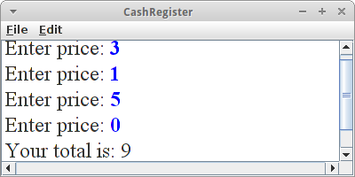Übung: CashRegister
Eine schöne und typische Anwendung für den 'Loop and a Half' ist die Kasse in einem Laden: wir haben z.B. fünf Sachen in unserem Einkaufswagen und wollen jetzt bezahlen. Der Kassierer tippt also die Preise der einzelnen Waren, eine nach der anderen in die Kasse, die diese addiert und am Ende gibt sie aus wieviel wir bezahlen sollen:
int total = 0;
while (true) {
int price = readInt("Enter price: ");
if ( price == 0 ) break;
total += price;
}
println("Your total is: " + total);
Da aber nicht alle Leute immer genau fünf Sachen kaufen, brauchen wir irgendein Abbruchkriterium: in unserem Fall ist es wenn der Kassierer die 0 für den Preis eingibt. Man nennt dieses Abbruchkriterium im Englischen manchmal auch den Sentinel.
Frage: Könnten wir auch eine negative Zahl als Abbruchkriterium verwenden?
SEP: Man sollte möglichst nicht mehrere 'breaks' verwenden.
.
Post-Increment vs Pre-Increment
Wir haben bisher nur den Inkrement Operator als Post-Inkement Operator gesehen, es gibt ihn aber auch als Pre-Inkement. Der Unterschied ist, dass einmal das ’++’ vor der Variablen steht (pre) oder danach (post). Also:
int x = 5; int y = x++; // Post: y=5
oder
int x = 5; int y = ++x; // Pre: y=6
Der Unterschied ist subtil, und man bemerkt ihn nur wenn dieser Operator in Zusammenhang mit Assignments oder anderen Operationen steht:
int a = 6;
int x = ++a;
int y = x++;
In der zweiten Zeile wird zuerst (pre) die Variable a um eins erhöht, und danach die Zuweisung gemacht. In der letzten Zeile, wird zuerst die Zuweisung gemacht, und danach (post) die Variable x um eins erhöht.
.
Review
Was haben es geschafft! Dieses Kapitel war etwas schwieriger als die beiden vorhergehenden. Dafür geht es von nun an aber bergab. Was haben wir in diesem Kapitel gelernt? Wir haben
- Variablen kennengelernt,
- uns an den Restwert Operator erinnert,
- unseren ersten Kontakt mit Konstanten gehabt,
- Boolesche Operatoren und Wahrheitstabellen zum ersten Mal gesehen,
- festgestellt, dass die if und die switch Anweisung sehr ähnlich sind,
- gelernt wann wir eine for und wann eine while Schleife verwenden sollen und
- im 'Loop and a Half' die Lösung für unser OBOB Problem gefunden.
Das wichtigste in diesem Kapitel war, dass wir unsere ersten Schritte auf eine solide Basis gestellt haben.
.
Projekte
Die folgenden Projekte sind vielleicht nicht ganz so interessant wie die des letzten Kapitels. Aber sie stellen die Grundlage für die folgenden Kapitel dar.
.
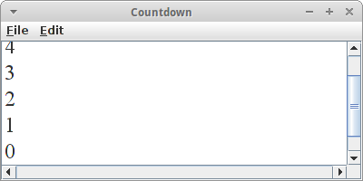Countdown
Karel liebt Raketen und besonders den Countdown kurz vorher. Deswegen wollen wir ein Programm schreiben, dass auf der Konsole die Zahlen von 10 bis 0 ausgibt.
.
.
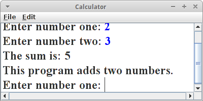Calculator
Das mit dem DoubleBeeper war für Karel ziemlich viel Arbeit. Mit Konsolenprogrammen und Variablen geht das viel einfacher. Deswegen wollen wir ein Konsolenprogrammen schreiben, das zwei Zahlen addiert.
Was etwas störend an dem Programm ist, das man es jedes mal neu starten muss, wenn man eine neue Addition machen will. Was könnte man tun, damit das Programm mehrere Additionen (immer von zwei Zahlen) erlaubt?
.
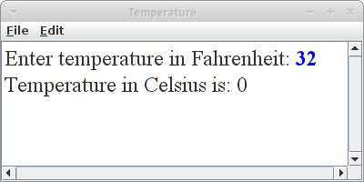Temperature
Karel liebt Amerika, aber er kann nichts mit diesen Fahrenheit anfangen. Deswegen schreiben wir ihm ein Programm, das Fahrenheit in Celsius umrechnet. Wir bitten den Benutzer uns eine Temperatur in Fahrenheit zu geben. Mittels readInt() speichern wir diese in der Variablen f. Und mit der Formel
int c = (int) ( (5.0 / 9.0) * (f - 32) );
können wir das in Celsius umrechnen.
Neu an dieser Formel ist was das (int) macht: Es handelt sich hier um einen Cast oder Typumwandlung auf Deutsch. Dazu müssen wir kurz überlegen um welchen Datentype es sich denn bei (5.0 / 9.0) * (f - 32) handelt? Sobald einer der Operanden ein double ist, wird das ganze Ergebnis in einen double umgewandelt. Dann haben wir aber auf der einen Seite der Zuweisung einen double stehen und auf der anderen aber eine int. Das ist nicht gut. Deswegen konvertieren wir den double in einen int, und genau das macht (int).
.
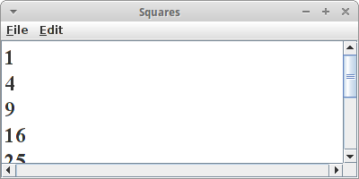Squares
Als Beispiel für die Verwendung von Konstanten wollen wir ein ConsoleProgram schreiben, das die Quadratzahlen der Zahlen von 0 bis MAX_NUM ausgibt, wo MAX_NUM eine Konstante sein soll die auf den Wert 10 gesetzt wird.
SEP: Zauberzahlen (magic numbers): Zauberzahlen sind Zahlen die irgendwo in unserem Code auftauchen, und man hat meist keine Ahnung wo sie herkommen und was sie bedeuten. Deswegen sollten alle Zahlen ausser die 0, 1 und 2 als Konstanten deklariert werden.
.
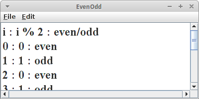EvenOdd
Wir wollen ein kleines ConsoleProgram schreiben, dass die Zahlen von 0 bis 10 listet, daneben den Wert der Zahl % 2, und schließlich ob die Zahl gerade oder ungerade ist.
.
.
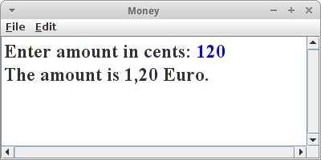Money
Wenn wir in unseren Programmen mit Geld zu tun haben stellt sich zunächst die Frage sollen wir dafür einen int Datentyp oder einen double Datentyp verwenden? Die Antwort ist ganz einfach, wenn man sich die Frage stellt: kann man Geld zählen? Für alles was man zählen kann verwendet man den int Datentyp.
Das heißt wenn wir mit Geld arbeiten sollten wir immer mit Cents rechnen. Allerdings wenn wir diese dann ausgeben, wäre es besser wenn wir nicht 120 Cents ausgeben würden sondern 1,20 Euro. Auch hier ist der Restwert Operator '%' von großem Nutzen:
int money = 120;
int euros = money / 100;
int cents = money % 100;
println("The amount is " + euros + "," + cents + " Euro.");
Um sicher zu stellen, dass unser Code wirklich funktioniert, sollten wir verschiedene Eingaben ausprobieren. Gute Testkandidaten sind die Eingaben: 120, 90, 100, 102 und 002. Hat unser Programm immer die richtige Ausgabe zurückgegeben?
.
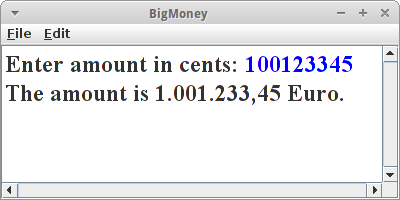BigMoney
Bei Beträgen über tausend Euro wird noch bei den Tausendern und auch bei den Millionen noch ein Punkt eingefügt, also z.B.: 1.001.233,45 Euro. Wir wollen also eine Methode formatNumericString(int cent) schreiben, die einen Geldbetrag in Cent als Übergabeparameter erhält, und einen String zurückliefert, der richtig formatiert ist. Wenn wir das Programm testen, sollten wir den obigen Betrag verwenden. Wir werden feststellen, dass es Sinn macht eine Methode padWithZeros() zu schreiben.
Auch hier sollten wir verschiedene Eingaben testen, z.B. 100123345, 100123305, und 05.
.
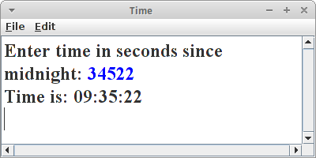Time
Menschen bevorzugen es die Uhrzeit in Stunden, Minuten und Sekunden anzugeben. Computer hingegen denken nur in Sekunden, also Sekunden die seit Mitternacht vergangen sind. Deswegen wollen wir ein Programm schreiben, das aus den Sekunden die seit Mitternacht vergangen sind, die momentane Uhrzeit berechnet. Dazu benötigen wir wieder den Restwert Operator. Unter Umständen macht es auch wieder Sinn eine Methode padWithZeros() zu schreiben, die sicher stellt, dass anstelle von "6" Minuten "06" Minuten angezeigt werden.
Zum Testen sollten wir mindestens die folgenden Eingaben ausprobieren: 5, 61, 85, 3600, 3601.
.
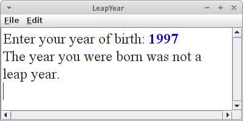LeapYear
Wir haben ja oben gesehen wie man feststellt ob ein Jahr ein Schaltjahr ist. Mit diesem Wissen wollen wir ein Konsolenprogramm schreiben, das ausgibt, ob das Jahr in dem jemand geboren wurde ein Schaltjahr war. Z.B., sollte 1996, 2000, und 2004 ein Schaltjahr sein, 1900 und 2000 sollten aber keine sein.
.
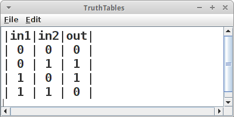TruthTables*
In diesem Projekt wollen wir uns mit dem boolschen Datentyp und den logischen Operatoren && (und), || (oder) und ^ (exklusives oder) auseinandersetzen. Wir wollen dafür ein Programm schreiben, dass die Wahrheitstabellen für alle drei Operatoren berechnet und ausgibt. Evtl hilfreich ist der folgende Trick wie man aus einem int Datentyp einen boolean Datentyp erzeugt:
int in1 = 0;
boolean b1 = (in1 != 0);
.
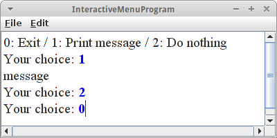InteractiveMenuProgram
Sehr häufig benötigt man in einem Konsolenprogramm eine Art Menu. Der Benutzer kann über die Eingabe einer Zahl zwischen verschiedenen Menupunkten auswählen. Wir wollen daher ein Programm schreiben, in dem der Benutzer zwischen drei Möglichkeiten auswählen kann: wenn er '0' eingibt, soll das Programm beendet werden, wenn er '1' eingibt soll eine Nachricht ausgegeben werden, und wenn er '2' eingibt soll gar nichts passieren. Als erste soll ihm natürlich mitgeteilt werden was seine Optionen sind:
println("0: Exit / 1: Print message / 2: Do nothing");
Dann beginnt ein 'Loop and a Half', also while (true). Wir fragen den Benutzer nach seiner Wahl
int choice = readInt("Your choice: ");
Wenn der Benutzer die '0' eingibt beenden wir den 'Loop and a Half'
if (choice == 0) break;
Danach folgt dann ein switch oder cascading if für die Wahlmöglichkeiten '1' und '2'.
.
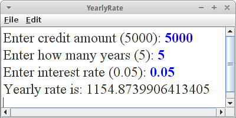YearlyRate
Karel will sich ein Auto kaufen, deswegen hat er angefangen zu sparen. Er will sich einen Mini kaufen (Mercedes ist zu teuer), und er hat einen gebrauchten für 5000 Euro gesehen. Er hat einen günstigen Kredit bei einer Bank von 5% pro Jahr gesehen. Wie hoch ist seine jährliche Rate, wenn er den Kredit in 5 Jahren abbezahlt haben will?
Karel braucht also ein Programm bei dem er die Kreditsumme (k) eingeben kann, den Zinssatz (z) und die Laufzeit in Jahren (n). Das Programm soll ihm dann sagen wie hoch seine jährliche Rate (y) ist. Die Formel dafür kann man aus der Wikipedia unter Sparkassenformel nachsehen [2]:
double q = 1.0 + z; double qn = Math.pow(q, n); // q^n double y = k * qn * (q-1) / (qn-1);
Hilfreich zu wissen ist noch, dass man Gleitkommazahlen mit readDouble() einlesen kann.
.
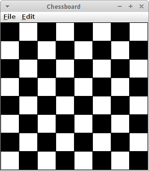ChessBoard
Wir wollen ein Schachbrettmuster mit Hilfe von GRects zeichnen. Natürlich muss das ein GraphicsProgram sein. Es ist eine schöne, aber nicht ganz leichte Anwendung von Schleifen und Restwertoperator '%'.
.
Fragen
-
Nennen Sie vier der primitiven Datentypen von Java.
-
Was ist eine Zauberzahl (magic number)?
-
Was ist der Unterschied zwischen einem GraphicsProgram und einem ConsoleProgram?
-
In der Vorlesung haben Sie von vielen Software Engineering Prinzipien gehört. Geben Sie drei Beispiele.
-
Beim Programmieren gibt es einige typische Fehler die immer wieder passieren (Common Errors). Nennen Sie zwei dieser Fehler.
-
Schreiben Sie ein ConsoleProgram, das den Benutzer nach der Radius eines Kreises fragt, und dann dessen Fläche berechnet (Fläche = PI * Radius * Radius) und diese auf der Console ausgibt.
-
Was ist der Unterschied zwischen 'print("hi")' und 'println("hi")'?
-
Was macht die 'readInt()' Methode?
-
Was sind die Werte der Variablen 'x' und 'y' nachdem die folgenden drei Zeilen ausgeführt wurden?
a = 6;
x = ++a;
y = x++;
-
Was ist das Ergebnis der folgenden Ausdrücke:
- int m = (int) 3.7688;
- int n = 14 % 12;
- int o = 4 + 5 * 3 / 2;
-
Was ist das Resultat des folgenden Ausdrucks?
int x = 3 - 3 * 6 / 4;
-
Was ist der Unterschied zwischen
a) 13 / 5
b) 13 / 5.0
-
Viele Programmierfehler rühren von fehlenden Klammern und/oder Leerzeichen. Die folgenden Beispiele sollen verdeutlichen, dass es einfacher ist Klammern zu setzen als die Operatorvorrangsregeln (rules of precedence) auswendig zu lernen.
i) Was ist der Wert von 'j'?
int i = 5;
int j = i+++--i;
ii) Was ist der Wert von 'y'?
int y = 3 * 4 % 5 * 6 – 3;
iii) Was ist der Wert von 'b'?
int x = 5;
int z = 3;
boolean b = x != 5 || x < z == z < 3;
-
Angenommen, Sie haben eine Varable x vom Typ int gegeben, also int x = 3;. Wie kann man diese in eine Variable namens y vom Typ double umwandeln (cast)?
-
Beschreiben Sie mit Ihren eigenen Worten was der folgende Ausdruck bedeutet:
(x < 0) || (x > WIDTH)
-
Was ist der Vorteil wenn man Konstanten verwendet?
-
Vergleichen Sie die beiden 'switch' Beispiele unten, und beschreiben Sie ausgegeben wird.
a) int day = 0;
switch (day) {
case 0:
println("Sunday");
break;
case 6:
println("Saturday");
break;
}
b) int day = 0;
switch (day) {
case 0:
println("Sunday");
case 6:
println("Saturday");
}
-
Welche Werte kann eine boolesche (boolean) Variable annehmen?
-
Welchen Datentyp muss die Variable 'b' in dem Beispiel unten haben?
if ( b ) {
println("hi");
}
-
Schreiben Sie den Test der feststellt, ob eine Zahl y ist durch 400 teilbar ist.
-
Erinnern Sie sich an den Remainder ’%’ Operator? Geben Sie zwei Beispiele wofür man diesen gebrauchen kann.
-
Menschen bevorzugen es Zeiten in Stunden, Minuten und Sekunden anzugeben. Computer bevorzugen es nur in Sekunden zu rechnen. So ist z.B. 13 Uhr 35 Minuten und 12 Sekunden für den Computer einfach 48912 Sekunden. Benutzen Sie dieses Wissen um die Computerzeit 't' in eine menschenlesbare Form, also Stunden, Minuten und Sekunden umzuwandeln. Sie dürfen auch mehrere Zwischenschritte verwenden.
-
Wann sollte man eine for–Schleife und wann eine while–Schleife benutzen?
-
Alles was man mit einer 'for' Schleife machen kann, kann man auch mit einer 'while' Schleife machen und umgekehrt. Schreiben Sie die folgende 'for' Schleife als 'while' Schleife um.
for (int i=0; i<5; i++) {
println(i);
}
-
Beschreiben Sie den Aufbau des 'loop-and-a-half'. Welches Prolem löst dieser?
-
Loop and a Half (Schleife und eine Halbe): Schreiben Sie das folgende Karel Beispiel mithilfe des Loop and a Half. Was ist der Vorteil des Loop and a Half?
public void run() {
while ( frontIsClear() ) {
putBeeper();
}
putBeeper();
}
.
Referenzen
Referenzen zu den Themen in diesem Kapitel finden sich in praktisch jedem Buch zu Java, insbesondere natürlich auch in [3].
[1] Jeliot 3, Program Visualization application, University of Helsinki, cs.joensuu.fi/jeliot/description.php
[2] Seite „Sparkassenformel“. In: Wikipedia, Die freie Enzyklopädie. URL: https://de.wikipedia.org/w/index.php?title=Sparkassenformel&oldid=143971427
[3] The Art and Science of Java, von Eric Roberts, Addison-Wesley, 2008
.